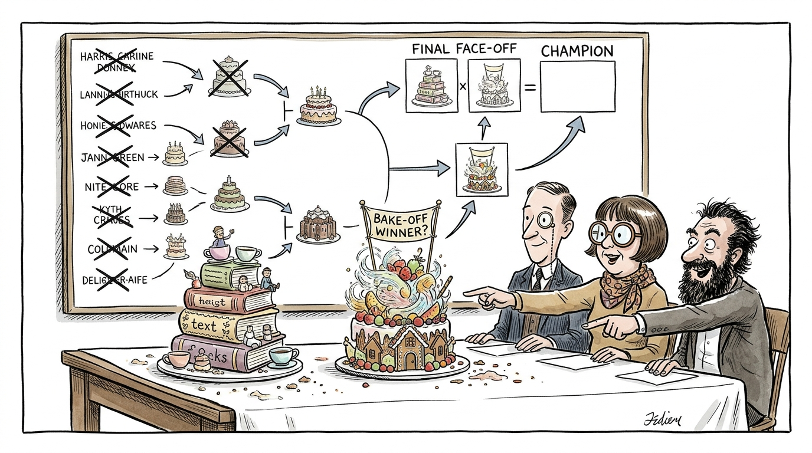
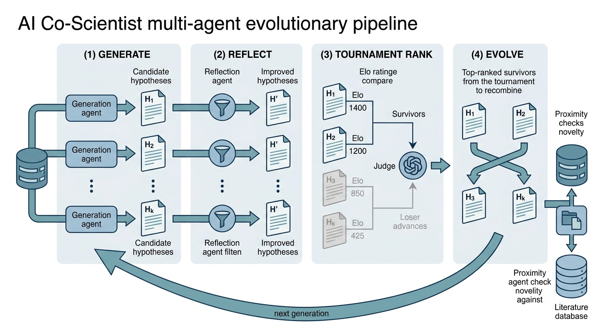

Prerequisites
This section builds directly on the four research agent roles from Section 40.1. You should understand the literature, coding, analysis, and reviewer agent architectures, along with the memory systems (episodic, semantic, procedural) that persist knowledge across sessions. The multi-agent debate pattern from Chapter 17 returns here as the core mechanism in AI Co-Scientist. Familiarity with chemistry is helpful for understanding Coscientist and ChemCrow but is not required; the architectural lessons transfer to any scientific domain.
The individual research agents from Section 40.1 are powerful but incomplete. A literature agent that does not write code cannot test its findings. A coding agent that does not read the literature may re-implement solved problems. The landmark systems in this section show what happens when multiple research agents are composed into end-to-end scientific workflows: systems that can autonomously plan experiments, execute them, analyze results, and iterate. We examine three systems that represent distinct architectural philosophies: Coscientist (tool-augmented single agent), ChemCrow (domain-expert tool chain), and Google AI Co-Scientist (multi-agent debate with tournament ranking). Each teaches a different lesson about how to build systems that do, rather than merely discuss, science.
1. Coscientist: Autonomous Chemical Research
What distinguishes an "AI scientist" from the individual research agents in Section 40.1? The threshold is end-to-end autonomy: a system that can take a research question as input and, with minimal human intervention, execute the full cycle of literature review, hypothesis formation, experiment design, data collection, analysis, and iteration. The three systems in this section each cross that threshold in a different way and at a different scope.
In 2023, a GPT-4-powered system searched the literature for a synthesis procedure, wrote the control code for a robotic liquid handler, ran Suzuki and Sonogashira cross-coupling reactions (palladium-catalyzed methods for forming carbon-carbon bonds, widely used in pharmaceutical and materials synthesis), read the resulting spectra, and decided what to try next, all without a human touching a single flask. That system was Coscientist (Boiko et al., 2023), published in Nature as the first demonstration of a large language model (LLM)-driven agent that autonomously plans and executes real chemical experiments. It used GPT-4 as its reasoning engine, connected to five tool modules that gave it access to the physical world.
Without systems like these, a research team that wants to explore a novel synthesis must manually search the literature, hand-code instrument protocols, and wait for a human to interpret every spectrum before deciding the next step; a single unexpected byproduct can stall progress for days.
In a tool-augmented LLM agent, the language model serves as the central reasoning and planning engine. It delegates all concrete actions (computation, data retrieval, hardware control) to external tool modules through structured interfaces. This architecture matters because it separates what the model is good at (language understanding, planning, reasoning under uncertainty) from what it is bad at (exact arithmetic, factual recall, physical manipulation), letting each component handle the task it does best. The mechanism works as follows: the LLM receives a goal and emits a tool name with arguments as structured output. The system executes that tool, returns the result as text, and the LLM decides the next step. Use a tool-augmented single agent when your workflow is sequential and the tools are heterogeneous; switch to a multi-agent architecture (as in AI Co-Scientist) when you need parallel hypothesis generation or adversarial quality filtering.
Coscientist implements this pattern with a direct architecture. A central LLM planner receives a high-level goal ("Synthesize compound X") and decomposes it into a sequence of tool calls. The five tool modules are:
- Web search: Queries Google and chemical databases to find synthesis procedures, safety data, and reagent information.
- Documentation lookup: Reads technical manuals for laboratory hardware (specifically the Opentrons OT-2 liquid handler).
- Code execution: Runs Python code in a sandboxed environment for calculations, data processing, and experiment planning.
- Hardware control: Sends commands to the Opentrons OT-2 robotic system to physically execute synthesis steps (pipetting, mixing, heating).
- Spectroscopy analysis: Reads and interprets nuclear magnetic resonance (NMR) and ultraviolet-visible (UV-Vis) spectroscopy data to verify that the synthesized product matches expectations.
The critical insight from Coscientist is that the LLM never touches the chemicals. It operates entirely through tool interfaces, making decisions about what to do next based on textual descriptions of instrument readings and experimental outcomes. This separation between reasoning (LLM) and actuation (tools) is the same pattern we saw in the agent loop from Chapter 10, now applied to physical-world experiments. In short: The LLM reasons; the tools act; neither is sufficient alone, but together they close the loop from hypothesis to physical result.
"""
Simplified Coscientist architecture: a planner LLM with tool dispatch.
This captures the core loop without the chemistry-specific details.
"""
from dataclasses import dataclass, field
from typing import Any
@dataclass
class CoscientistState:
"""State maintained across the planning loop."""
goal: str
plan: list[dict] = field(default_factory=list)
executed_steps: list[dict] = field(default_factory=list)
observations: list[str] = field(default_factory=list)
status: str = "planning" # planning, executing, analyzing, complete
class CoscientistAgent:
"""Simplified Coscientist: LLM planner with five tool modules.
Architecture follows Boiko et al. (2023), Nature 624, 570-578.
"""
PLANNER_PROMPT = """You are a scientific experiment planner. Given a
synthesis goal, decompose it into steps using these tools:
- web_search(query): Search for procedures and safety data.
- lookup_docs(instrument, topic): Read instrument documentation.
- run_code(code): Execute Python for calculations.
- hardware_command(instrument, action, params): Control lab hardware.
- analyze_spectrum(data_path, spectrum_type): Interpret spectral data.
Plan step by step. After each tool result, decide whether to proceed,
revise the plan, or abort if safety concerns arise.
"""
def __init__(self, llm_client, tools: dict[str, Any]):
self.llm = llm_client
self.tools = tools
async def plan(self, goal: str) -> list[dict]:
"""Generate a multi-step experiment plan."""
response = await self.llm.chat(
system=self.PLANNER_PROMPT,
user=(
f"Goal: {goal}\n\n"
"Generate a step-by-step plan as a JSON list. "
"Each step: {\"tool\": \"name\", \"action\": \"...\", "
"\"params\": {...}, \"safety_check\": \"...\"}."
),
)
import json
return json.loads(response.content)
async def execute_plan(self, goal: str) -> CoscientistState:
"""Execute the full Coscientist loop: plan, execute, observe, replan."""
state = CoscientistState(goal=goal)
# phase 1: initial planning
state.plan = await self.plan(goal)
state.status = "executing"
for step in state.plan:
# safety gate: check before executing
if not await self._safety_check(step):
state.status = "aborted_safety"
state.observations.append(
f"Safety check failed for: {step['action']}"
)
break
# execute the tool
tool_fn = self.tools.get(step["tool"])
if tool_fn is None:
state.observations.append(
f"Unknown tool: {step['tool']}"
)
continue
result = await tool_fn(**step["params"])
state.executed_steps.append({
**step,
"result": str(result),
})
state.observations.append(str(result))
# after each step: ask the LLM whether to continue or replan
should_continue = await self._evaluate_progress(state)
if not should_continue:
# replan based on observations
state.plan = await self._replan(state)
state.status = "analyzing"
# phase 2: analyze final results
state.status = await self._final_analysis(state)
return state
async def _safety_check(self, step: dict) -> bool:
"""Verify that a step is safe to execute."""
response = await self.llm.chat(
system=(
"You are a laboratory safety officer. Evaluate whether "
"this step is safe. Consider: chemical hazards, equipment "
"limits, and human safety. Return JSON: "
'{"safe": true/false, "reason": "..."}'
),
user=f"Step: {step}",
)
import json
result = json.loads(response.content)
return result["safe"]
async def _evaluate_progress(self, state: CoscientistState) -> bool:
"""Decide whether the current plan is still valid."""
response = await self.llm.chat(
system="Evaluate experiment progress. Should we continue?",
user=(
f"Goal: {state.goal}\n"
f"Completed: {len(state.executed_steps)}/{len(state.plan)}\n"
f"Latest observation: {state.observations[-1]}\n"
'Return JSON: {"continue": true/false, "reason": "..."}'
),
)
import json
return json.loads(response.content)["continue"]
async def _replan(self, state: CoscientistState) -> list[dict]:
"""Generate a revised plan based on observations."""
return await self.plan(
f"{state.goal}\n\nObservations so far:\n"
+ "\n".join(state.observations)
)
async def _final_analysis(self, state: CoscientistState) -> str:
"""Analyze whether the experiment achieved its goal."""
response = await self.llm.chat(
system="Analyze experiment results.",
user=(
f"Goal: {state.goal}\n"
f"Steps executed: {len(state.executed_steps)}\n"
f"Final observations: {state.observations[-3:]}\n"
'Return: "complete" if goal achieved, "partial" if '
'partially achieved, "failed" if not.'
),
)
return response.content.strip()
Coscientist's most important feature is not any individual tool but the replan loop. After each experimental step, the LLM evaluates whether the results match expectations. If a reaction yields an unexpected byproduct, the system does not blindly continue; it generates a revised plan that accounts for the observation. This is the scientific method in miniature: hypothesize, test, observe, revise. The replan loop transforms a brittle script into an adaptive system. It is also what makes Coscientist expensive: every replan step costs an additional LLM call, and a complex synthesis with multiple unexpected observations can require dozens of replanning cycles.
2. ChemCrow: Domain Expert Tool Augmentation
Where Coscientist uses general-purpose tools (web search, code execution) and relies on the LLM's latent chemistry knowledge, ChemCrow (Bran et al., 2024) takes the opposite approach: it augments the LLM with 18 expert chemistry tools that encode domain knowledge directly. The LLM acts as a router, deciding which tool to call, but the heavy lifting (retrosynthesis, where the system works backward from a target molecule to identify available starting materials and reaction steps, property prediction, safety assessment) is done by specialized chemistry software.
ChemCrow's 18 tools span four categories:
Molecular tools: Simplified Molecular-Input Line-Entry System (SMILES) validation, name-to-SMILES conversion, molecular weight calculation, similarity search against chemical databases. These replace the LLM's unreliable mental arithmetic with exact computation.
Reaction tools: Retrosynthesis prediction (using IBM RXN), forward reaction prediction, reaction feasibility scoring. These encode decades of organic chemistry knowledge in callable functions.
The first two categories (molecular and reaction tools) address what a compound is and how to make it; the next two address whether you should make it.
Property tools: Solubility prediction, toxicity screening (using Tox21 models), drug-likeness scoring (Lipinski's rules, a set of four molecular property thresholds that predict whether a compound is likely to be orally bioavailable), and ADMET (absorption, distribution, metabolism, excretion, toxicity) prediction. These are trained ML models exposed as tool interfaces.
Safety tools: Explosive potential screening, controlled substance checking, and general safety data sheet (SDS) lookup. These are critical guardrails that prevent the system from proposing dangerous syntheses.
"""
ChemCrow-style tool registry: domain tools exposed to an LLM agent.
Based on Bran et al. (2024), Nature Machine Intelligence 6, 525-535.
"""
from dataclasses import dataclass
from typing import Callable, Any
@dataclass
class ChemTool:
"""A chemistry tool with metadata for the LLM to select from."""
name: str
description: str
category: str # "molecular", "reaction", "property", "safety"
function: Callable[..., Any]
required_params: list[str]
returns: str
class ChemCrowToolkit:
"""Registry of domain-expert chemistry tools."""
def __init__(self):
self.tools: dict[str, ChemTool] = {}
def register(self, tool: ChemTool):
"""Register a chemistry tool."""
self.tools[tool.name] = tool
def get_tool_descriptions(self) -> str:
"""Format tool descriptions for the LLM system prompt."""
lines = []
for tool in self.tools.values():
lines.append(
f"- {tool.name}: {tool.description}\n"
f" Parameters: {tool.required_params}\n"
f" Returns: {tool.returns}"
)
return "\n".join(lines)
async def call(self, tool_name: str, **kwargs) -> Any:
"""Execute a tool by name with safety validation."""
tool = self.tools.get(tool_name)
if tool is None:
raise ValueError(f"Unknown tool: {tool_name}")
# if the tool produces a molecule, run safety screening first
result = tool.function(**kwargs)
if tool.category == "reaction":
safety_result = await self._safety_screen(result)
if not safety_result["safe"]:
return {
"result": result,
"safety_warning": safety_result["reason"],
"blocked": True,
}
return {"result": result, "blocked": False}
async def _safety_screen(self, reaction_result) -> dict:
"""Screen reaction products for safety concerns."""
# in production: call explosive screening, controlled substance
# check, and toxicity prediction tools
return {"safe": True, "reason": ""}
def build_chemcrow_toolkit() -> ChemCrowToolkit:
"""Build a ChemCrow-style toolkit with representative tools."""
toolkit = ChemCrowToolkit()
# molecular tools
toolkit.register(ChemTool(
name="smiles_to_name",
description="Convert a SMILES string to an IUPAC chemical name",
category="molecular",
function=lambda smiles: _lookup_name(smiles),
required_params=["smiles"],
returns="IUPAC name as string",
))
toolkit.register(ChemTool(
name="molecular_weight",
description="Calculate the molecular weight from a SMILES string",
category="molecular",
function=lambda smiles: _calc_mw(smiles),
required_params=["smiles"],
returns="Molecular weight in g/mol",
))
# reaction tools
toolkit.register(ChemTool(
name="retrosynthesis",
description=(
"Predict synthesis routes for a target molecule using "
"retrosynthetic analysis"
),
category="reaction",
function=lambda target_smiles: _retro(target_smiles),
required_params=["target_smiles"],
returns="List of synthesis routes with reagents and conditions",
))
# property tools
toolkit.register(ChemTool(
name="toxicity_screen",
description="Screen a molecule for toxicity using Tox21 models",
category="property",
function=lambda smiles: _tox_screen(smiles),
required_params=["smiles"],
returns="Toxicity predictions across 12 Tox21 endpoints",
))
# safety tools
toolkit.register(ChemTool(
name="explosive_check",
description="Check if a molecule has explosive potential",
category="safety",
function=lambda smiles: _explosive_check(smiles),
required_params=["smiles"],
returns="Risk assessment: low/medium/high with explanation",
))
return toolkit
# placeholder implementations (real ones call RDKit, IBM RXN, etc.)
def _lookup_name(smiles: str) -> str:
from rdkit import Chem
mol = Chem.MolFromSmiles(smiles)
return Chem.MolToSmiles(mol) if mol else "Invalid SMILES"
def _calc_mw(smiles: str) -> float:
from rdkit.Chem import Descriptors, MolFromSmiles
mol = MolFromSmiles(smiles)
return Descriptors.MolWt(mol) if mol else 0.0
def _retro(target: str) -> list[dict]:
return [{"route": "placeholder", "confidence": 0.0}]
def _tox_screen(smiles: str) -> dict:
return {"endpoint_results": {}, "overall_risk": "unknown"}
def _explosive_check(smiles: str) -> dict:
return {"risk": "low", "reason": "No energetic groups detected"}
The architectural lesson from ChemCrow is that domain tools reduce hallucination
by replacing generation with computation. When you ask an LLM "What is the
molecular weight of aspirin?", it might answer 180.16 g/mol (correct) or 181.42 g/mol
(wrong, a common hallucination). When you give the LLM a molecular_weight
tool that calls RDKit, it always gets the exact answer. Bran et al. report that
tool-augmented performance on chemistry tasks exceeds bare GPT-4 by 20 to 40 percentage
points, depending on the task category.
Consider the task "Propose a synthesis route for ibuprofen and assess its safety."
Coscientist would search the web for ibuprofen synthesis procedures, read
the results, write Python code to plan the steps, and call its safety check module.
The LLM does the heavy reasoning; the tools provide information and actuation.
ChemCrow would call retrosynthesis("CC(C)Cc1ccc(CC(C)C(=O)O)cc1")
to get a computationally derived route, then toxicity_screen() and
explosive_check() on each intermediate. The tools do the heavy reasoning;
the LLM orchestrates. Coscientist is more flexible (it can handle tasks beyond
its tool set by searching), but ChemCrow is more reliable (its answers come from
validated chemistry software, not LLM generation). The ideal system combines both:
domain tools for tasks where accuracy is critical, general tools for tasks where
flexibility matters.
3. Google AI Co-Scientist: Debate and Tournament Ranking
Google's AI Co-Scientist (Gottweis et al., 2025) represents a fundamentally different architecture. Rather than a single agent with tools, it uses a multi-agent system where specialized agents generate, critique, and rank scientific hypotheses through an iterative debate process inspired by evolutionary computation.
The system comprises several specialized agent roles:
Generation agents produce candidate hypotheses based on a research goal and the existing literature. Multiple generators run in parallel, each with slightly different prompting or temperature settings, to ensure diversity.
Reflection agents take a generated hypothesis and improve it by identifying weaknesses, filling gaps, and strengthening the reasoning. This is an internal self-critique step before the hypothesis faces external review.
Ranking agents evaluate and compare hypotheses using a tournament-style bracket. Pairs of hypotheses are presented to a judge agent, which selects the stronger one based on novelty, feasibility, and scientific rigor. The tournament produces a ranked list where the top hypotheses advance to the next round.
Checkpoint
So far: AI Co-Scientist splits hypothesis work across three agent roles: generators that produce candidates, reflectors that self-critique each one, and rankers that compare pairs in a tournament to surface the strongest ideas.
Mental Model

Think of the tournament ranking like a competitive bake-off. Each baker (generation agent) submits a cake (hypothesis). A panel of food critics (ranking agents) never scores any cake in isolation on a 1-to-10 scale, because absolute scores are unreliable and inconsistent across judges. Instead, two cakes are placed side by side, and the critics say which one tastes better. After many such pairwise tastings, a leaderboard emerges (Elo ratings, where Elo is a numerical rating system originally developed for ranking chess players that updates each competitor's score based on the outcome of pairwise matches) that reliably orders all cakes from best to worst. The top bakers then share recipes and techniques (recombination) to produce the next round's entries. The key insight the analogy maps: comparative judgment between two concrete options tends to be more reliable than absolute scoring, both for human judges and for LLMs (Zheng et al., 2024).
Proximity agents check each hypothesis against the existing literature to assess whether it is genuinely novel or merely restates known findings. This prevents the system from confidently "discovering" something that was published five years ago.
Meta-review agents synthesize feedback across the tournament rounds and produce an overall assessment of the hypothesis landscape: which directions are most promising, which have been adequately explored, and where gaps remain.
The full loop, illustrated in Figure 40.2, operates as follows. Figure 40.2.1 illustrates the AI Co-Scientist multi-agent evolutionary pipeline.

where \(k\) is the generation population size, \(m < k\) is the number of survivors after tournament selection, and the "evolve" step recombines the best hypotheses (analogous to crossover in genetic algorithms) to produce the next generation's seed. This process repeats for a configurable number of generations.
"""
AI Co-Scientist tournament ranking mechanism.
Based on Gottweis et al. (2025), Google DeepMind.
"""
from dataclasses import dataclass, field
import random
@dataclass
class Hypothesis:
"""A candidate scientific hypothesis with metadata."""
id: str
content: str
reasoning: str
generation: int = 0
tournament_wins: int = 0
tournament_losses: int = 0
novelty_score: float = 0.0
feasibility_score: float = 0.0
elo_rating: float = 1200.0 # starting Elo
@property
def win_rate(self) -> float:
total = self.tournament_wins + self.tournament_losses
return self.tournament_wins / total if total > 0 else 0.5
class TournamentRanker:
"""Rank hypotheses using pairwise tournament with Elo ratings.
Inspired by the AI Co-Scientist's tournament selection mechanism,
which uses LLM-as-judge to compare hypothesis pairs.
"""
def __init__(self, judge_llm, k_factor: float = 32.0):
self.judge = judge_llm
self.k_factor = k_factor
async def run_tournament(
self,
hypotheses: list[Hypothesis],
rounds: int = 3,
) -> list[Hypothesis]:
"""Run a multi-round tournament and return ranked hypotheses."""
for round_num in range(rounds):
# shuffle and pair
candidates = list(hypotheses)
random.shuffle(candidates)
pairs = []
for i in range(0, len(candidates) - 1, 2):
pairs.append((candidates[i], candidates[i + 1]))
# judge each pair
for h_a, h_b in pairs:
winner = await self._judge_pair(h_a, h_b)
self._update_elo(h_a, h_b, winner)
# sort by Elo rating (highest first)
hypotheses.sort(key=lambda h: h.elo_rating, reverse=True)
return hypotheses
async def _judge_pair(
self, h_a: Hypothesis, h_b: Hypothesis
) -> str:
"""Ask an LLM judge to compare two hypotheses."""
import json
response = await self.judge.chat(
system=(
"You are a scientific hypothesis evaluator. Compare two "
"hypotheses on: (1) novelty, (2) feasibility, (3) potential "
"impact, (4) testability. Select the stronger one.\n"
"Return JSON: {\"winner\": \"A\" or \"B\", "
"\"reasoning\": \"...\", \"scores\": "
"{\"A\": {\"novelty\": 0-10, ...}, "
"\"B\": {\"novelty\": 0-10, ...}}}"
),
user=(
f"Hypothesis A [{h_a.id}]:\n{h_a.content}\n"
f"Reasoning: {h_a.reasoning}\n\n"
f"Hypothesis B [{h_b.id}]:\n{h_b.content}\n"
f"Reasoning: {h_b.reasoning}"
),
)
result = json.loads(response.content)
return result["winner"]
def _update_elo(
self, h_a: Hypothesis, h_b: Hypothesis, winner: str
):
"""Update Elo ratings based on the match outcome."""
# expected scores
e_a = 1.0 / (1.0 + 10 ** ((h_b.elo_rating - h_a.elo_rating) / 400))
e_b = 1.0 - e_a
# actual scores
if winner == "A":
s_a, s_b = 1.0, 0.0
h_a.tournament_wins += 1
h_b.tournament_losses += 1
else:
s_a, s_b = 0.0, 1.0
h_b.tournament_wins += 1
h_a.tournament_losses += 1
# update ratings
h_a.elo_rating += self.k_factor * (s_a - e_a)
h_b.elo_rating += self.k_factor * (s_b - e_b)
class CoScientistPipeline:
"""Complete AI Co-Scientist generate-debate-rank pipeline."""
def __init__(
self,
generator_llm,
reflector_llm,
judge_llm,
proximity_checker,
population_size: int = 10,
num_generations: int = 3,
survival_fraction: float = 0.5,
):
self.generator = generator_llm
self.reflector = reflector_llm
self.ranker = TournamentRanker(judge_llm)
self.proximity = proximity_checker
self.pop_size = population_size
self.generations = num_generations
self.survival_fraction = survival_fraction
async def run(self, research_goal: str) -> list[Hypothesis]:
"""Run the full generate-reflect-rank evolutionary loop."""
hypotheses = []
for gen in range(self.generations):
# generate new hypotheses
if gen == 0:
new_hyps = await self._generate_initial(
research_goal, self.pop_size
)
else:
# evolve from survivors
survivors = hypotheses[
: int(len(hypotheses) * self.survival_fraction)
]
new_hyps = await self._evolve(
research_goal, survivors, self.pop_size
)
# reflect on each hypothesis
refined_hyps = []
for h in new_hyps:
refined = await self._reflect(h)
refined.generation = gen
refined_hyps.append(refined)
# check novelty against literature
for h in refined_hyps:
h.novelty_score = await self.proximity.check_novelty(
h.content
)
# combine with surviving hypotheses from prior generations
all_candidates = (
hypotheses[: int(len(hypotheses) * self.survival_fraction)]
+ refined_hyps
)
# tournament ranking
hypotheses = await self.ranker.run_tournament(
all_candidates, rounds=3
)
return hypotheses
async def _generate_initial(
self, goal: str, n: int
) -> list[Hypothesis]:
"""Generate the initial population of hypotheses."""
import json
hypotheses = []
for i in range(n):
response = await self.generator.chat(
system=(
"Generate a novel scientific hypothesis for the "
"given research goal. Be creative and specific. "
"Return JSON: {\"hypothesis\": \"...\", "
"\"reasoning\": \"...\", \"testable_prediction\": \"...\"}"
),
user=f"Research goal: {goal}\n(Candidate {i + 1} of {n})",
temperature=0.9 + (i * 0.02), # diversity via temperature
)
data = json.loads(response.content)
hypotheses.append(Hypothesis(
id=f"gen0_h{i}",
content=data["hypothesis"],
reasoning=data["reasoning"],
))
return hypotheses
async def _reflect(self, hypothesis: Hypothesis) -> Hypothesis:
"""Improve a hypothesis through self-critique."""
response = await self.reflector.chat(
system=(
"Critique and improve this hypothesis. Identify "
"weaknesses, fill gaps, strengthen the reasoning. "
"Return the improved version."
),
user=(
f"Hypothesis: {hypothesis.content}\n"
f"Reasoning: {hypothesis.reasoning}"
),
)
return Hypothesis(
id=hypothesis.id + "_reflected",
content=response.content,
reasoning=hypothesis.reasoning,
)
async def _evolve(
self, goal: str, survivors: list[Hypothesis], n: int
) -> list[Hypothesis]:
"""Generate new hypotheses by recombining survivors."""
import json
hypotheses = []
for i in range(n):
# select two parents
parent_a = random.choice(survivors)
parent_b = random.choice(survivors)
response = await self.generator.chat(
system=(
"Combine ideas from two parent hypotheses to create "
"a novel child hypothesis. Take the strongest elements "
"of each and resolve contradictions creatively."
),
user=(
f"Research goal: {goal}\n"
f"Parent A: {parent_a.content}\n"
f"Parent B: {parent_b.content}\n"
"Return JSON: {\"hypothesis\": \"...\", "
"\"reasoning\": \"...\"}"
),
temperature=0.8,
)
data = json.loads(response.content)
hypotheses.append(Hypothesis(
id=f"gen_evolved_h{i}",
content=data["hypothesis"],
reasoning=data["reasoning"],
))
return hypotheses
CoScientistPipeline orchestrates generation with temperature-varied diversity, self-reflective refinement, pairwise Elo ranking via TournamentRanker, and survivor recombination across configurable generations (Gottweis et al., 2025).The tournament mechanism solves a fundamental problem in generative AI: you can generate many candidates, but you cannot automatically tell which are good. Traditional approaches use a single scoring function (perplexity, a reward model, a classifier). The tournament uses comparative judgment: rather than asking "How good is hypothesis A on a scale of 1 to 10?" (which LLMs answer unreliably), it asks "Is hypothesis A better than hypothesis B?" (which LLMs answer more reliably, following the findings of Zheng et al., 2024 on LLM-as-judge). The Elo rating system then aggregates pairwise comparisons into a global ranking. This is the same principle behind Chatbot Arena, applied to scientific hypotheses rather than chatbot responses.
4. Architectural Comparison
The three systems represent three points on a design spectrum. Table 40.1 summarizes where each sits, helping you choose the right architecture for your own research agent system.
| Dimension | Coscientist | ChemCrow | AI Co-Scientist |
|---|---|---|---|
| Agent count | Single planner | Single router | Multiple specialized |
| Tool philosophy | General purpose | Domain expert | LLM-native (debate) |
| Physical world | Yes (hardware control) | No (computation only) | No (hypothesis only) |
| Selection mechanism | LLM replanning | LLM routing | Tournament ranking |
| Diversity strategy | Search breadth | Tool coverage | Temperature + evolution |
| Safety mechanism | Per-step safety check | Tool-level screening | Proximity + human review |
| Cost profile | High (many replans) | Low (one-shot tools) | Very high (population x generations) |
| Best for | Lab automation | Chemistry Q&A | Hypothesis exploration |
The key trade-off is between flexibility and reliability. Coscientist can search the web for any procedure but is most susceptible to LLM errors propagating into physical experiments. ChemCrow gives exact answers through domain tools but cannot operate outside its 18-tool repertoire. AI Co-Scientist explores the widest hypothesis space but at the highest cost and with no physical validation.
5. Safety and Human Oversight
The reliability concerns in Table 40.1 are not merely academic inconveniences; when a research agent controls physical hardware or informs clinical decisions, an unchecked error can cause real harm. Research agents that can plan experiments, execute code, and propose chemical syntheses carry risks that go beyond incorrect outputs. The safety considerations fall into three categories:
Dual-use risk. A system that can plan synthesis routes for beneficial drugs can also plan routes for harmful compounds. Coscientist addresses this with a safety check module that screens each step before execution. ChemCrow includes an explosive screening tool and controlled substance checker. Both rely on the same principle: the safety tools must be harder to bypass than to use. In practice, this means the safety check should be a hard-coded gate in the execution pipeline, not a removable plugin.
Cascading errors. A literature agent that misreads a paper feeds incorrect information to the coding agent. The coding agent then writes an experiment based on wrong assumptions, and the analysis agent dutifully executes it. The reviewer agent (Section 40.1) is the primary defense, but it can only catch errors it can detect. Plausible-looking but wrong results pose the greatest danger. Defense in depth requires multiple independent checks: the reviewer agent, human spot-checks at critical junctures, and automated consistency tests (does the claimed result match the raw data?).
Automation bias (the tendency for humans to over-trust outputs from automated systems, especially when those outputs appear confident and detailed). When a sophisticated AI system reports a finding with confidence, human researchers tend to accept it without sufficient scrutiny. This is especially dangerous when the AI system produces results that are technically impressive but scientifically flawed. The mitigation is structural: research agent outputs should always be labeled as provisional, requiring explicit human sign-off before being incorporated into publications or decision-making. The human gates from Chapter 17 apply here with even greater force.
Common Misconception
A frequent misconception is that these AI scientist systems "do science autonomously," implying that the human role is limited to pressing start and reading the final output. This is incorrect. Every system described in this section requires human oversight at critical decision points: Coscientist's safety checks are designed to escalate to a human when confidence is low, ChemCrow's outputs require expert interpretation, and AI Co-Scientist's hypotheses are explicitly framed as candidates for human evaluation. The AI handles search, computation, and ranking at scale; the human provides judgment about what questions are worth asking, whether the results are scientifically meaningful, and whether proposed experiments are ethical. Removing the human from the loop does not produce faster science; it produces unverified output.
A research agent that generates hypotheses, runs experiments, and writes up results can produce output that looks like science without being science. The difference is verification: real science is checked by independent replication, peer review, and community scrutiny. Research agents must be tools that assist human scientists, not replacements for the scientific process. Every finding produced by a research agent system should be treated as a lead that requires independent validation, not as an established result. The claim validation methods in Chapter 41 provide systematic approaches for this verification step.
The systems in this section operate at different points in the scientific workflow, and the frontier is closing the gap between hypothesis generation and physical validation. Yoshikawa et al. (2023) demonstrated an autonomous system that combined Bayesian optimization with a robotic flow reactor to discover novel organic reactions without human intervention across a 50-reaction search campaign. More recently, Google DeepMind's AMIE (Articulate Medical Intelligence Explorer, Tu et al., 2024) showed that multi-agent debate architectures similar to AI Co-Scientist can match specialist-level diagnostic reasoning when grounded in structured clinical data. On the materials science front, Szymanski et al. (2023) published A-Lab in Nature, an autonomous laboratory that used LLM-guided planning with robotic synthesis and characterization to produce 41 novel inorganic compounds from a set of 58 targets over 17 days. These systems point toward a near-term future where the cognitive layer (hypothesis, planning, analysis) and the physical layer (robotic synthesis, automated characterization) operate in a single closed loop, with human scientists setting objectives and validating milestones rather than executing individual steps.
Try It: Build a Mini Hypothesis Tournament
Implement a simplified version of the AI Co-Scientist's tournament ranking using any LLM API you have access to (OpenAI, Anthropic, or a local model via Ollama).
1. Generate candidates. Write a Python script that prompts an LLM five
times with the same research question (for example, "What mechanisms could explain why
exercise improves memory?") at temperature 0.9, collecting five distinct hypothesis
paragraphs. Store each as a dictionary with an id, content,
and elo field initialized to 1200.
2. Build the judge. Write a function that takes two hypotheses, formats
them as "Hypothesis A" and "Hypothesis B" in a prompt, and asks the LLM to return JSON
with a "winner" field ("A" or "B") and a "reasoning" field.
Parse the response and return the winner.
3. Run three tournament rounds. In each round, shuffle the hypotheses, pair them up, call your judge on each pair, and update Elo ratings using the standard formula: \(E_A = 1 / (1 + 10^{(R_B - R_A)/400})\), then \(R_A' = R_A + 32 \cdot (S_A - E_A)\).
4. Detect position bias. For each pair, run the judgment twice (A vs B, then B vs A). Log whether the two verdicts agree. Compute the disagreement rate across all pairs and rounds.
5. Analyze and report. Print the final Elo ranking, the position-bias disagreement rate, and the total number of LLM calls used. Compare the cost at your model's per-token pricing to estimate what a population-50, 10-generation run would cost.
Exercises
- Conceptual: Compare Coscientist's replanning loop with AI Co-Scientist's tournament ranking. Both are mechanisms for improving quality through iteration. Under what conditions would you prefer replanning (adjusting a single plan based on observations) over tournament ranking (generating many candidates and selecting the best)? Consider cost, latency, and the nature of the research task.
-
Coding: Extend the
TournamentRankerto detect and mitigate position bias (the tendency of LLM judges to prefer whichever hypothesis is presented first). Implement a double-blind comparison where each pair is judged twice (A vs B, then B vs A), and the winner is determined by the consistent verdict. If the two judgments disagree, mark the pair as a draw. Test with 10 hypothesis pairs and report the rate of position-bias disagreements. - Analysis: The AI Co-Scientist pipeline with population size 10, 3 generations, and 3 tournament rounds makes approximately $10 \times 3 + 10 \times 3 + \binom{10}{2} \times 3 \times 3 = 30 + 30 + 405 = 465$ LLM calls (generation + reflection + tournament judging). At \$0.01 per call (GPT-4o-mini) or \$0.10 per call (GPT-4o), compute the total cost. At what point does it become cheaper to hire a postdoc for a week? What does this imply about the optimal model choice for each agent role?
Exercise 40.2.1
Coscientist's architecture routes every action through a single LLM planner that calls one of five tool modules. Suppose the planner encounters an unexpected spectroscopy result (a peak at an unexpected wavelength) during a Suzuki coupling reaction. Trace the decision path: which tool(s) would the planner invoke next, in what order, and what information would it need from each tool to decide whether to continue, replan, or abort? Write out the sequence of tool calls and the decision logic at each step.
Hint
Start with the analyze_spectrum tool to characterize the unexpected peak.
Then consider whether a web_search for known byproducts of Suzuki coupling
would help identify the compound. The _safety_check method runs before every
execution step, so think about what new safety concerns an unknown byproduct introduces
and how the _evaluate_progress method would use the combined observations to
trigger replanning via _replan.
Step-Through: Elo Rating Update in a Three-Hypothesis Tournament
Trace through one tournament round with three hypotheses (A, B, C), all starting at Elo 1200, using K=32. After shuffling, suppose the pairs are (A vs B) and C sits out.
Match: A vs B. Expected score for A: \(E_A = 1 / (1 + 10^{(1200 - 1200)/400}) = 1 / (1 + 10^0) = 1/2 = 0.50\). Suppose the judge picks A as winner (\(S_A = 1\), \(S_B = 0\)). New rating for A: \(1200 + 32 \times (1.0 - 0.50) = 1200 + 16 = 1216\). New rating for B: \(1200 + 32 \times (0.0 - 0.50) = 1200 - 16 = 1184\). C stays at 1200 (no match this round).
Round 2 pairing: B vs C. Now $E_B = 1 / (1 + 10^{(1200 - 1184)/400}) = 1 / (1 + 10^{0.04}) \approx 1 / (1 + 1.0965) \approx 0.477$. If C wins: \(R_C = 1200 + 32 \times (1.0 - 0.523) = 1200 + 15.3 \approx 1215\). \(R_B = 1184 + 32 \times (0.0 - 0.477) = 1184 - 15.3 \approx 1169\). Final ranking after two matches: A (1216) > C (1215) > B (1169). Notice how C, despite never facing A, lands just one point below A because the Elo system propagates information transitively through shared opponents.
Real-World Application: Drug Repurposing with AI Co-Scientist
Google's AI Co-Scientist was applied to identify candidate drugs for acute myeloid leukemia (AML) treatment. The system generated hypotheses about existing approved drugs that might target AML pathways, ranked them via tournament debate, and produced candidates that were subsequently validated by wet-lab experiments at Stanford. This demonstrates the tournament architecture operating not as a toy demo but as the front end of a real drug discovery pipeline, where the top-ranked hypotheses directly inform which compounds enter costly experimental screening.
The Robot That Outperformed the Textbook
When Coscientist was tasked with optimizing a palladium-catalyzed Suzuki reaction, it reportedly discovered reaction conditions (catalyst loading, temperature, solvent ratio) that produced higher yields than the standard textbook protocol (Boiko et al., 2023). The system did not "understand" chemistry in any deep sense; it simply explored the parameter space more systematically than a human following a recipe. The irony: the optimization succeeded partly because the LLM had no prior commitment to the textbook answer and treated the published conditions as just another hypothesis to test rather than ground truth.
Lab: Build and Benchmark a Hypothesis Tournament
Goal: Measure how reliably LLM-as-judge pairwise ranking produces consistent orderings, and quantify position bias.
Tools needed: Python 3.10+, an LLM API key (OpenAI, Anthropic, or a
local model via ollama), and the openai or
anthropic Python package.
Procedure (25 minutes): (1) Prompt the LLM five times at temperature
0.9 with "Propose a mechanism by which gut microbiome composition influences sleep
quality" to generate five hypotheses. (2) Implement the TournamentRanker
from this section with K=32 and run three rounds. (3) For each pair, run the judgment
twice with swapped positions (A vs B, then B vs A) and log agreement. (4) Repeat the
full tournament three times with different random seeds.
What to vary: Try temperature 0.0 vs 0.7 for the judge LLM. Try different system prompts (concise "pick the better one" vs detailed rubric with novelty/feasibility/testability criteria).
What to observe: Position-bias disagreement rate (typically 15 to 30% with GPT-4o in published benchmarks), Kendall tau correlation (a rank-order correlation statistic that counts how many pairs of items two rankings agree or disagree on) between rankings from different seeds (measures stability), and total API cost. If position bias exceeds 25%, the double-blind mitigation from Exercise 2 becomes essential.
What's Next
You have seen how landmark systems combine research agent roles into autonomous scientific workflows. Section 40.3: Building a Research Agent Team puts this knowledge into practice: you will build your own multi-agent research team modeled on the AI Co-Scientist architecture, using OpenAI Agents SDK for agent orchestration, LangGraph for the debate loop, PaperQA2 for literature retrieval, DSPy for structured pipelines, and MLflow for experiment tracking. The recipe produces a working system that takes a research question and returns ranked, critiqued hypotheses with supporting evidence.